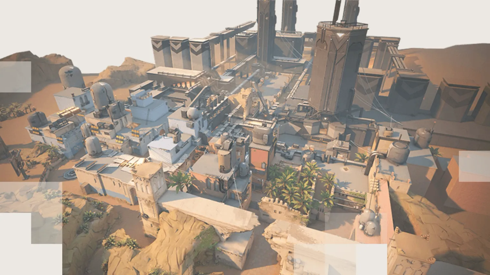

КАРТЫ(прокопова)
ICEBOX
Вам предстоит сражаться на заброшенной секретной арктической базе Kingdom. Точки для установки бомбы защищены снегом и металлом. Здесь вам пригодятся хитрость и ловкость. Воспользуйтесь тросами, чтобы остаться незамеченными или застать врага врасплох.
ASCENT
Две точки Ascent отделены друг от друга открытой площадкой для мелких позиционных стычек и отстрела противников. Каждая точка может быть усилена герметичными дверьми; после их активации вам понадобится либо уничтожить их, либо найти другой путь на точку. Ни шагу назад!
BIND
Две точки. Никакого мида. Куда же идти, направо или налево? Что бы вы ни выбрали, на каждом направлении есть прямой маршрут для нападения и односторонний телепорт для выхода за спины противников.

BREEZE
Добро пожаловать в тропический рай. Любуйтесь древними руинами, исследуйте морские пещеры и приводите с собой друзей. Здесь вас ждут открытая местность и перестрелки на дальних дистанциях, так что помощь лишней точно не будет. Главное – вовремя прикрыть фланги.
LOTUS
Загадочное сооружение излучает древнюю астральную энергию. Величественные каменные врата дают простор для тактического передвижения. А еще за этими вратами скрываются еще 3 таинственных места.
PEARL
Эта карта с двумя точками, где защитники поджидают атакующих внизу, расположена в живописном подводном городе. На Pearl нет необычных механик – только интересный ландшафт. Сражайтесь на небольшом миде или в длинных боковых проходах на нашей первой карте на Земле "Омега".
SUNSET
Авария на местном объекте Kingdom поставила под угрозу целый район. Перекусите в любимой забегаловке и отправляйтесь сражаться на классической городской карте с тремя линиями.
SPLIT
На этой карте большое значение имеет занятие высот. Две точки отделяет друг от друга центр с высокими позициями, на которые можно быстро подняться по веревкам. Контроль над каждой точкой помогут удержать возвышающиеся над ними башни. Не забывайте поглядывать вверx.
FRACTURE
Секретный исследовательский центр, разделенный надвое из-за неудавшегося эксперимента с радианитом. Эта необычная карта открывает различные возможности для защитников: застаньте атакующих врасплох на их стороне или задраивайте люки, чтобы пережить штурм. Выбор за вами!
HAVEN
Стены забытого монастыря сотрясает шум боя агентов, сражающихся за контроль над тремя точками. Территории для захвата больше, но защитникам гораздо легче агрессивно пушить противника.